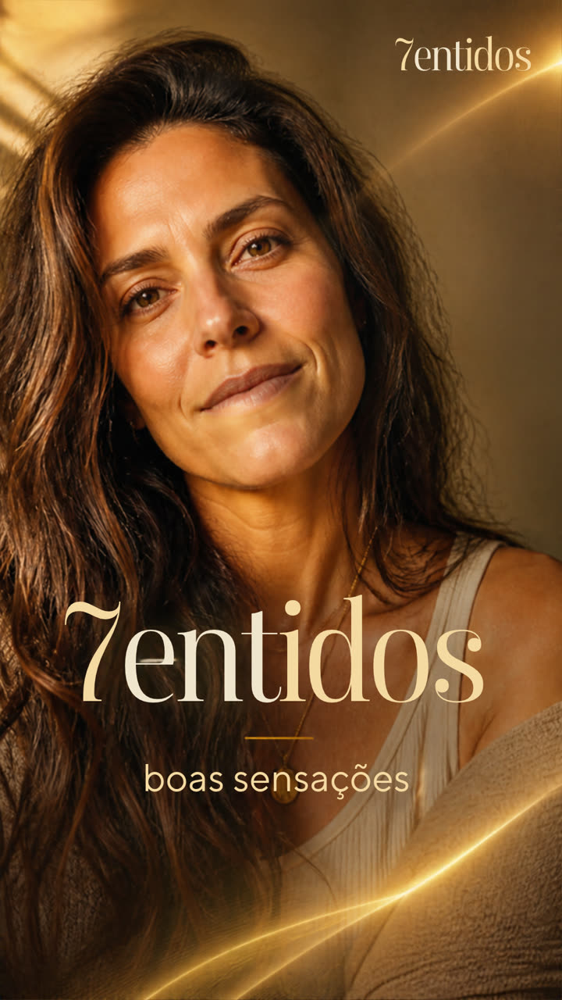

Você sabe
o que te faz bem?
A vida é feita de boas sensações.
Explore sensações, memórias e novas possibilidades. Descubra pistas sobre o que faz sentido para você.
Começar minha jornada- 1visão
- 2audição
- 3tato
- 4olfato
- 5paladar
- 6equilíbrio
- 7noção do corpo

A Casa dos 7 Sentidos
Sete sentidos, uma casa, um Brasil. Sete moradores, cada um com o seu sentido, convivem, disputam provas e descobrem qual sentido o brasileiro mais valoriza.
Estreia domingo, 08/11, às 16h no Instagram, no Facebook e no TikTok.
O que é o 7ENTIDOS
Muita coisa boa passa sem a gente reparar: um cheiro, uma música, uma textura, um lugar, uma pessoa.
O 7ENTIDOS ajuda você a reconhecer essas experiências, a lembrar das que já viveu e a entender o que elas têm em comum. Com isso, sugere novas experiências possíveis, sempre como hipóteses que você confirma ou corrige.
Quem decide o que faz sentido é você. O aplicativo organiza as pistas.
O que ele não é. O 7ENTIDOS não é terapia nem tratamento, não faz diagnóstico e não promete felicidade permanente. A exploração de memórias é sempre voluntária.
Os sete sentidos
- Visãoluz, cores, formas, paisagens
- Audiçãomúsica, vozes, sons do ambiente
- Tatotexturas, temperatura, toque
- Olfatoaromas e o que eles fazem lembrar
- Paladarsabores, refeições, rituais
- Equilíbriomovimento, embalo, ritmo
- Noção do corpoposição, força, estar à vontade no corpo
- De dentrorespiração, batimentos, calma (bônus)
Uma jornada em cinco movimentos
Esta é a jornada proposta para o aplicativo. Ela está em teste e pode mudar.
Reconhecer
Perceber experiências positivas do dia a dia e do passado.
Explorar
Olhar para as sensações e memórias ligadas a elas, sentido por sentido.
Identificar
Encontrar padrões pessoais: o que se repete no que faz bem a você.
Descobrir
Receber sugestões de experiências novas, cada uma com o porquê.
Registrar
Guardar e refletir sobre o vivido.
Sem metas, sem culpa e sem comparação com outras pessoas. As conclusões do aplicativo são hipóteses revisáveis, nunca verdades sobre você.
O que já existe e o que ainda vem
O app chega ao Google Play e à App Store em 1º/12. Enquanto isso, as primeiras fases já podem ser jogadas aqui no site, na Jornada dos 7entidos.
Começar minha jornada Sem cadastro. Suas escolhas ficam neste navegador.
- 1
Mapa dos 7 sentidos
No siteEm cada sentido, você escolhe 7 de 15 opções do dia a dia. Das suas escolhas nasce o seu mapa.
- 2
Pódio dos Sentidos
Em breve no siteComeça com “Que som é esse?” e segue com um mini-jogo por sentido. A sua ordem de preferência aparece sozinha.
- 3
Minha régua
No siteDez palavras, de Êxtase a Péssimo. Cada uma ganha uma lembrança sua e vira o seu jeito de medir o que sente.
- 4
Hall da Fama
1º/12A nave pousa: suas conquistas, a sua pintura dos 7 sentidos e o baú com tudo o que você fez para baixar.
Próximas etapas
- Novas fases da jornada
- Guardar tudo na nuvem, para não perder ao trocar de celular
- Museu do 7entidos com as peças dos pintores
- Apagar todos os seus dados com um toque
Momentos 10×10
Uma fotografia para cada sentido.
O que se sabe, o que se estuda e o que ainda vamos testar
Separamos o que tem base sólida do que é promissor e do que é só uma ideia do produto. A ciência apoia o método; quem diz o que faz bem é você.
Evidência estabelecida
Achados confirmados por vários grupos de pesquisa.
- A pele tem nervos que respondem ao toque lento e suave.Quanto mais eles disparam, mais agradável o toque costuma ser descrito.Löken e colegas, Nature Neuroscience, 2009
- Sentimos a posição do corpo graças a sensores específicos.A proteína Piezo2 é peça central da noção do corpo. A descoberta desses sensores recebeu o Nobel de Medicina de 2021.Woo e colegas, Nature Neuroscience, 2015 · Nobel 2021
Estudos promissores
Resultados interessantes, com amostras pequenas ou ainda pouco repetidos.
- A música de que gostamos libera dopamina, inclusive na espera pelo trecho preferido.Salimpoor e colegas, Nature Neuroscience, 2011
- Lembranças trazidas por cheiros tendem a ser mais emocionais.Herz e Schooler, American Journal of Psychology, 2002
- Ser embalado devagar ajudou adultos a dormir mais rápido e mais profundamente.Perrault e colegas, Current Biology, 2019
- Caminhadas procurando o que encanta aumentaram emoções positivas em pessoas mais velhas.Sturm e colegas, Emotion, 2020
- Prestar atenção ao que se vive (saborear) intensifica experiências positivas.Bryant e Veroff, Savoring, 2007
Hipóteses do produto
Ideias do 7ENTIDOS que ainda serão testadas.
- Observar um sentido por vez ajuda a perceber padrões pessoais.Inspirado nos estudos sobre saborear. A testar no piloto.
- Uma escala própria de 1 a 10 torna os registros comparáveis para a mesma pessoa.Cada pessoa define o que cada nível significa. A testar.
- Saber que uma experiência vem aí já faz parte do prazer.Ideia inspirada nos estudos sobre antecipação. Não comprovada para o aplicativo.
Nem tudo precisa ser explicado.
Algumas coisas só precisam ser sentidas.
Um projeto independente, em construção
O 7ENTIDOS nasceu de uma pergunta simples: o que, de fato, faz bem a cada pessoa? Começou como um projeto pessoal de autoconhecimento e foi ganhando forma até adotar os sete sentidos como base.
É desenvolvido de forma independente, com apoio de ferramentas de inteligência artificial, e passa por testes antes de qualquer lançamento.
- APP GIANINIPrimeira versão, como projeto pessoal.
- Boas SensaçõesA ideia passa a ser pensada para outras pessoas.
- 7ENTIDOSOs sete sentidos viram a base do método e dão nome à marca.
- HojeJornada aberta no site e reality nas redes. O app chega às lojas em 1º/12.
Contato
contato@7entidos.com.br
Endereço em configuração. Ainda não envie mensagens.
O único formulário do site é o dos bastidores do reality, que guarda só o primeiro nome e o WhatsApp de quem se inscreve. Quando o e-mail estiver funcionando, ele será o canal oficial do projeto.